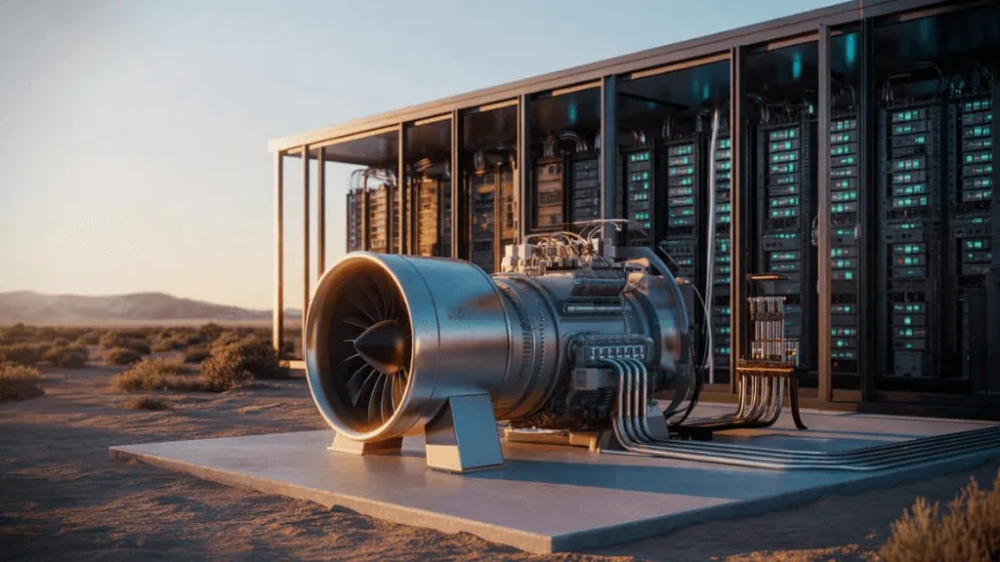

The United States wants to use a supersonic jet turbine to power data centres


The United States is at the forefront of innovation, constantly seeking ways to improve efficiency and reduce environmental impact. One area of focus is the power consumption of data centers, which are essential for storing and processing vast amounts of data. A recent development has caught attention: the potential use of supersonic jet turbines to power these data centers. This concept may seem unusual, but it has sparked interest and debate among experts and industry stakeholders.
As the world's reliance on digital technologies grows, so does the demand for data storage and processing. Traditional power sources, such as coal and gas, are being phased out in favor of more sustainable options. The idea of using supersonic jet turbines to power data centers is an intriguing one, offering a unique combination of high power output and potentially lower emissions. This article will explore the concept in more detail, examining the benefits, challenges, and feasibility of using supersonic jet turbines to power data centers.
Table of Contents
Introduction to Supersonic Jet Turbines
Supersonic jet turbines are designed to operate at extremely high speeds, generating a significant amount of power. These turbines are typically used in aerospace applications, such as powering jet engines. However, their high power output and compact design make them an attractive option for other industries, including power generation. The concept of using supersonic jet turbines to power data centers is still in its infancy, but it has the potential to offer several benefits, including increased efficiency and reduced emissions.
The use of supersonic jet turbines in power generation is not entirely new. These turbines have been used in various applications, such as peak power generation and emergency backup systems. However, their use in data centers is a relatively new concept. The idea is to utilize the high power output of supersonic jet turbines to generate electricity, which can then be used to power data centers. This approach could potentially reduce the carbon footprint of data centers, making them more sustainable and environmentally friendly.
The benefits of using supersonic jet turbines to power data centers are numerous. For one, these turbines can operate at high temperatures, making them ideal for combined heat and power (CHP) systems. CHP systems generate both electricity and heat, increasing overall efficiency and reducing waste. Additionally, supersonic jet turbines can be designed to run on a variety of fuels, including natural gas, biomass, and hydrogen, offering a high degree of flexibility.
Challenges and Limitations
While the concept of using supersonic jet turbines to power data centers is intriguing, there are several challenges and limitations to consider. One of the primary concerns is the high cost of these turbines. Supersonic jet turbines are complex and expensive to manufacture, making them a significant investment for data center operators. Additionally, these turbines require specialized maintenance and upkeep, which can add to their overall cost.
Another challenge is the noise and vibration generated by supersonic jet turbines. These turbines operate at extremely high speeds, producing a significant amount of noise and vibration. This can be a concern for data centers located in urban areas or near residential zones. Furthermore, the high power output of supersonic jet turbines can be difficult to manage, requiring specialized electrical infrastructure and grid connections.
Despite these challenges, researchers and industry stakeholders are exploring ways to overcome them. For example, advances in materials science and manufacturing have led to the development of more efficient and cost-effective supersonic jet turbines. Additionally, the use of noise reduction technologies and vibration dampening systems can help mitigate the negative impacts of these turbines.
Also Read
More trending stories →Feasibility and Future Prospects
The feasibility of using supersonic jet turbines to power data centers is still being explored. Several pilot projects and demonstrations are underway, aiming to test the concept and identify potential challenges. While the results are promising, there is still much work to be done to make this technology commercially viable.
One of the key factors in determining the feasibility of supersonic jet turbines for data center power is the cost of electricity (LCOE). The LCOE of supersonic jet turbines must be competitive with traditional power sources, such as coal and gas, to make them an attractive option for data center operators. Additionally, the environmental impact of supersonic jet turbines must be carefully considered, including their carbon footprint and potential emissions.
Despite the challenges, the future prospects for supersonic jet turbines in data center power are promising. As the technology continues to evolve and improve, we can expect to see more efficient and cost-effective designs. The use of supersonic jet turbines in data centers could potentially reduce greenhouse gas emissions, improve energy efficiency, and increase the reliability of power supplies.
Key Takeaways
- The United States is exploring the use of supersonic jet turbines to power data centers, focusing on efficiency and sustainability.
- Supersonic jet turbines offer a unique combination of high power output and potentially lower emissions, making them an attractive option for data center power.
- The feasibility of using supersonic jet turbines for data center power is still being explored, with several pilot projects and demonstrations underway.
Frequently Asked Questions
What are supersonic jet turbines?
Supersonic jet turbines are designed to operate at extremely high speeds, generating a significant amount of power. They are typically used in aerospace applications, such as powering jet engines.
How do supersonic jet turbines work?
Supersonic jet turbines use a combination of air and fuel to generate power. They operate at high temperatures and pressures, producing a high-speed exhaust gas that drives a turbine to generate electricity.
What are the benefits of using supersonic jet turbines to power data centers?
The benefits of using supersonic jet turbines to power data centers include increased efficiency, reduced emissions, and improved reliability. These turbines can operate at high temperatures, making them ideal for combined heat and power (CHP) systems.
Conclusion
The use of supersonic jet turbines to power data centers is an innovative concept that offers several benefits, including increased efficiency and reduced emissions. While there are challenges and limitations to consider, researchers and industry stakeholders are exploring ways to overcome them. As the technology continues to evolve and improve, we can expect to see more efficient and cost-effective designs. The future prospects for supersonic jet turbines in data center power are promising, with the potential to reduce greenhouse gas emissions, improve energy efficiency, and increase the reliability of power supplies.
Sarah Mitchell
Senior Tech Editor
Tech journalist with 8+ years of experience covering the latest in smartphones, EVs, AI, and consumer electronics. Bringing you accurate, well-researched stories from the world of technology.
Leave a Comment